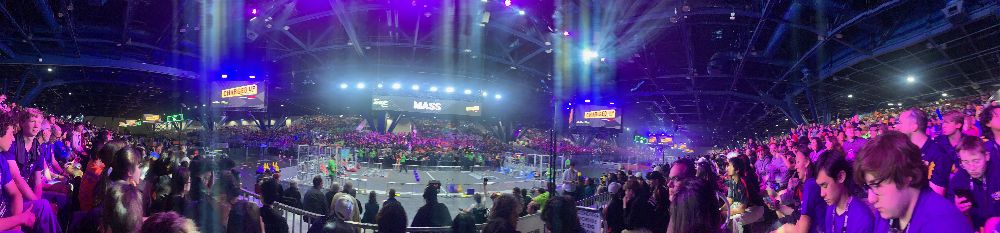

Extracurricular Activities 2022-2023

I am a member of the Piedmont robotics team, 8033 Highlander Robotics. I've been involved in robotics for a long time, participating in 2 levels of robotics for 5 years. At the beginning of my sophomore year I joined Highlander Robotics, participating in the highest level of high school robotics (FIRST Robotics Competition). This level of robotics needs parts made with tools that the team does itself.
I entered the team during the 2022 offseason, after the team had an incredible performance at the world championship during their first real year out of COVID. I assisted in the making of new improvements for the 2022 robot before an offseason competition in September, which included some of the best and most prestigious teams in the world.
The 2023 season was my first year of full participation, from watching the kickoff event to attending real onseason tournaments, I had finally been able to fully integrate myself into the team. As we qualified for the world championship yet again, I could not have been prouder of how far I came.

Here's a photo I took during the world championship in April.